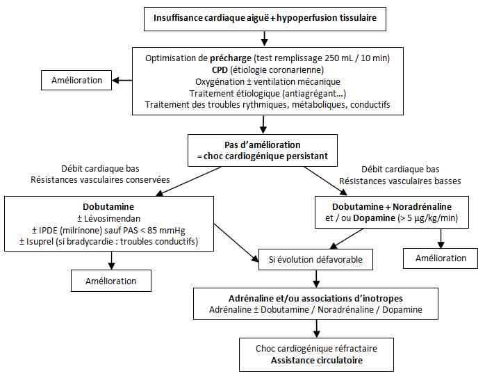

Bienvenue Sur Medical Education
Choc cardiogénique
Spécialité : cardiologie /
Points importants
-
Définition : choc cardiogénique (CC) = insuffisance circulatoire d’origine cardiaque = défaillance aiguë primitive (prédominante ou exclusive) de la pompe cardiaque entraînant des désordres hémodynamiques (vasoconstriction), métaboliques et viscéraux par chute du débit cardiaque et hypoperfusion tissulaire
-
Elle impose l’élimination ou la correction d’une hypovolémie. Le CC est une des causes de collapsus cardio-vasculaire
-
Il faut distinguer le CC sur insuffisance cardiaque aiguë (ICA) ou aiguë sur insuffisance cardiaque chronique (ICC).
-
Première cause de CC = IDM (CC = complication d’environ 5-10 % des IDM admis à l’hôpital)
-
Le CC correspond aux stades (III-) IV des classifications de Killip et (3-) 4 de Forrester lors d’un IDM aigu
-
Incidence = environ 50.000 cas/an (Etats-Unis)
-
Pathologie sévère avec une mortalité élevée à court et moyen terme (40-70 %), et à long terme (moins d'un tiers des patients ayant eu un CC sont vivants après 6 ans) ; 50 % des décès surviennent dans les 48 premières heures d'hospitalisation après CC sur IDM
-
ECG et échocardiographie sont les examens clés initiaux, avec la clinique et la biologie
-
Traitement de choix = catécholamines inotropes positives
-
La mise en place d’une assistance cardio-circulatoire (« ECMO ») impose la reconnaissance précoce du CC sévère ou réfractaire au traitement optimal et la discussion rapide avec une équipe habilitée, avant la survenue d’un arrêt cardiaque dramatique ou d’une défaillance multi-viscérale irréversible
Présentation clinique / CIMU
SIGNES FONCTIONNELS
-
Dyspnée
-
Douleur thoracique
-
Palpitations
CONTEXTE
-
Il est essentiellement dépendant de l’étiologie. Il faut distinguer le choc cardiogénique sur ICA (IDM et myocardite aigus…) ou aiguë sur ICC (cardiopathie dilatée…). La rapidité d’installation des signes est essentielle (cf. ICA suraiguë à subaiguë).
Présentation clinique / CIMU
SIGNES FONCTIONNELS
- Dyspnée
- Douleur thoracique
- Palpitations
CONTEXTE
- Il est essentiellement dépendant de l’étiologie. Il faut distinguer le choc cardiogénique sur ICA (IDM et myocardite aigus…) ou aiguë sur ICC (cardiopathie dilatée…). La rapidité d’installation des signes est essentielle (cf. ICA suraiguë à subaiguë).
Antécédents
- Insuffisance cardiaque chronique
- Chirurgie cardiaque (valves)
- TDR ou de conduction
- Episodes d’OAP antérieurs ou de décompensation autre
- Stimulateur cardiaque
Traitements usuels
- Traitement anti angineux, anti-arythmique
- Modification de traitement
Circonstances de survenue
- A l’effort ou au repos
- Evolution des signes (brutale ou progressive)
- Repas salé
EXAMEN CLINIQUE
Généraux
- = Signes de choc avec hypoperfusion tissulaire
- HoTA (PAS < 90 mmHg le plus souvent > 30 minutes, ou baisse > 30 mmHg de la PAM < 65 mmHg) avec souvent PA différentielle pincée (sauf insuffisance aortique aiguë)
- Tachycardie (> 60 bpm ; > 90 si sévère), rarement bradycardie (médicament ralentisseur, trouble conductif…)
- Oligo-anurie (< 0,5 mL/kg/h ou 30 mL/h ; < 0,3 mL/kg/h ou 20 mL/h si sévère)
- Somnolence, agitation/confusion (encéphalopathie)
- Polypnée (prendre la FR)
- Marbrures cutanées
- Peau et extrémités froides et cyanosées
Spécifiques
-
Signes d'insuffisance ventriculaire gauche :
- OAP (crépitants) (classification Killip)
- galop gauche
-
Signes d’insuffisance ventriculaire droite :
- turgescence des jugulaires
- reflux hépato-jugulaire
- hépatomégalie douloureuse
- œdèmes périphériques
- ascite
- Souffle cardiaque
- Arythmie
EXAMENS PARACLINIQUES SIMPLES
- Adaptés au contexte et centrés sur la recherche des causes et des conséquences du choc cardiogénique
- Ne doivent pas retarder mais doivent guider le traitement urgent
- SpO2
- ECG 18 dérivations (immédiat) : recherche de troubles conductifs, rythmiques et de syndrome coronarien aigu ST- ou ST+ (IDM), microvoltage
- Glycémie capillaire
CIMU
- Tri 1 ou 2
Signes paracliniques
BIOLOGIQUES
-
Glycémie sanguine (hyperglycémie liée aux catécholamines, possiblement de mauvais pronostic)
-
Ionogramme sanguin, recherche une :
-
dysnatrémie (hyponatrémie en cas d’ICC sous-jacente et de rétention hydro-sodée)
-
dyskaliémie (hyperkaliémie si insuffisance rénale associée ou hypokaliémie si hyperaldostéronisme, diurétiques ; risque de majoration des troubles rythmiques et conductifs)
-
dyscalcémie
-
dysphosphorémie
-
dysmagnésémie (troubles rythmiques)
-
Dosage de l’urée (hyperazotémie) et de la créatinine sanguines (insuffisance rénale fonctionnelle ou organique par bas débit)
-
Ionogramme urinaire (sur échantillon si insuffisance rénale associée) : natriurèse basse (profil fonctionnel), urée urinaire…
-
Dosage de troponine (Ic ou T) hyper ou ultrasensible (IDM constitué ou en voie de constitution, myocardite)
-
Dosage du BNP ou du NT-proBNP (élevé si augmentation des pressions de remplissage et/ou ICC ; mais sert surtout à éliminer l’étiologie cardiogénique)
-
Dosage de biomarqueurs de l’inflammation (fibrinogène, CRP : myopéricardite)
-
Lactates sanguins (hyperlactatémie > 2 mmol/L, de pronostic péjoratif)
-
Gaz du sang artériels :
-
alcalose respiratoire liée à l’acidose métabolique (lactates, insuffisance rénale)
-
rarement acidose hypercapnique (OAP massif avec fatigue respiratoire), hypoxie
-
NFS (anémie si ICC)
-
Bilan hépatique complet (transaminases, bilirubine…)
-
Hémostase (INR : antivitamine K, D-dimères : embolie pulmonaire, Facteur V et TP : insuffisance hépatique,CIVD, foie de choc …)
-
Bilan toxicologique sanguin et urinaire (dosage des antiarythmiques ou antihypertenseurs si traitement préalable à la recherche d’un surdosage : bêtabloquant, digitalique, inhibiteur calcique…)
IMAGERIE
- dysnatrémie (hyponatrémie en cas d’ICC sous-jacente et de rétention hydro-sodée)
- dyskaliémie (hyperkaliémie si insuffisance rénale associée ou hypokaliémie si hyperaldostéronisme, diurétiques ; risque de majoration des troubles rythmiques et conductifs)
- dyscalcémie
- dysphosphorémie
- dysmagnésémie (troubles rythmiques)
- alcalose respiratoire liée à l’acidose métabolique (lactates, insuffisance rénale)
- rarement acidose hypercapnique (OAP massif avec fatigue respiratoire), hypoxie
Radiographie thoracique au lit systématique
- Cardiomégalie, surcharge vasculaire, syndrome interstitiel ou alvéolaire d’OAP, pleurésie
Echocardiographie
- Initialement de débrouillage (trans-thoracique) puis au laboratoire ou en réanimation, dès stabilisation
-
Evaluation :
- de la fonction contractile (fraction d’éjection ventriculaire gauche et droite)
- de la dilatation des cavités cardiaques et du débit cardiaque aortique ou pulmonaire (volume d’éjection systolique via l’Intégrale Temps Vitesse des chambres de chasse ventriculaires)
- des pressions de remplissage (profil mitral, variabilité respiratoire)
- de l’état des valves cardiaques
- du péricarde et de l’aorte initiale
Coronarographie
- Essentiellement si syndrome coronarien aigu ST+ (IDM) ou clinique compatible associé à un bloc de branche gauche à l’ECG
Imagerie thoracique
- Angio-TDM spiralé (embolie pulmonaire, tamponnade)
- Ou TDM injecté (dissection aortique)
- Voire IRM (dissection aiguë sur chronique).
Diagnostic étiologique
-
Ce sont les causes d’ICA
Le plus fréquemment
- Cardiomyopathies d’origine coronarienne dont essentiellement l'IDM (massif ou compliqué : communication intra-ventriculaire, rupture ventriculaire, fuite valvulaire massive : 10% des causes de CC après IDM , extension ventriculaire droite…)
Fréquemment
- Cardiomyopathies restrictive, valvulaire ou obstructive (rétrécissement aortique, endocardite avec insuffisance valvulaire aiguë), rythmique (troubles du rythme supra- ou ventriculaire) ou par trouble de conduction de haut degré (bloc auriculo-ventriculaire…)
Parfois
- Cardiopathies droite (embolie pulmonaire, tamponnade…), dilatée (idiopathique, alcoolique…), restrictive ou congénitale décompensée
- Dissection aortique compliquée (insuffisance aortique, hémopéricarde…)
- Myocardite
- Dysfonction de prothèse valvulaire cardiaque (thrombose, désinsertion), post-cardiotomie (chirurgie cardiaque)
Plus rarement
- Etiologie extracardiaque carentielle (Béribéri…) ou endocrine (maladie de Paget, hyperthyroïdie…), toxique (antidépresseurs tricycliques, bêta-bloquants, nivaquine, digitaliques, carbamates…)
- Cardiomyopathies de stress (Tako-Tsubo), du péripartum, ou sur shunt droit-gauche
Diagnostic différentiel
-
Autres causes de choc : hypovolémique ou hémorragique, anaphylactique et septique
Traitement
TRAITEMENT PREHOSPITALIER / INTRAHOSPITALIER
Traitement
TRAITEMENT PREHOSPITALIER / INTRAHOSPITALIER
Stabilisation initiale
- Essentiellement symptomatique
- Pose de 2 VVP de bon calibre (14 ou 16 Gauge) avec garde veine (glucosé 5%)
- La perfusion par NaCl 0,9% n’est pas indiquée en cas d’OAP. En dehors d’une surcharge volémique patente, l’optimisation de la précharge est nécessaire (test de lever de jambe positif ; test de remplissage par 250 mL de macromolécules en 10 min sous monitorage, souvent efficace dans le CC sur IDM ou en postopératoire)
- Bicarbonates si CC toxique (stabilisant de membrane)
-
Médicaments inotropes positifs en IVSE :
- dobutamine en 1ère intention (par doses croissantes de 5 µg/kg/min toutes les 10-15 min) puis Adrénaline (doses croissantes de 0,05-0,5 µg/kg/min soit 0,3-1 mg/h toutes les 10-15 min)
- en cas de basse PA menaçant le pronostic vital immédiat ou de PA critique (PAM et PAD basses sous inotropes), un traitement vasopresseur (Dopamine ou Noradrénaline voire Adrénaline) peut être débuté avec les risques potentiels de majorer le bas débit cardiaque (augmentation de la post-charge théorique par vasoconstriction) et les troubles du rythme
- Objectifs tensionnels : PAS ≥ 90 mmHg
- Oxygénothérapie (pour SpO2 ≥ 95% et PaO2 ≥ 80 mmHg)
- VNI (VS-PEP ou CPAP) si indiquée (voir Ventilation non invasive)
-
La ventilation mécanique invasive par intubation oro-trachéale est systématique en première intention en cas :
- d’arrêt cardiaque
- de coma
- d’échec de ventilation non invasive
- d’OAP asphyxique
- d’absence immédiate de réponse hémodynamique aux inotropes positifs
- Contre-indication des vasodilatateurs (dérivés nitrés, IEC, nitroprussiate de sodium…) et des diurétiques avant toute normalisation hémodynamique
-
Si bradycardie (trouble conductif) :
- atropine (0,25-0 ,5 mg IV, jusqu’à un total de 1 à 2 mg)
- puis Isoprénaline (1 mg dans 100 mL de NaCl 0,9 %, perfusé jusqu’à un maximum de 75mL/h = 2 à 12mg/min)
- entraînement électro-systolique (externe ou sonde) si nécessaire
-
Si trouble du rythme ventriculaire :
- choc électrique externe
- si réfractaire : amiodarone (2 Ampoules sur 20-30 min au mieux sur cathéter central) avec nouveau choc
-
Si trouble du rythme supra-ventriculaire :
- digoxine 0,125 à 0,25 mg IV et discuter CEE si trouble du rythme responsable du CC
- éviter les bêta-bloquants (Brévibloc : Esmolol 0,5-1 mg/kg sur 1 min)
Suivi du traitement
- Contrôle de la glycémie capillaire
- Vitaminothérapie B1 en cas de cardiopathie dilatée d’origine éthylique
- Antalgiques si besoin
-
Autres traitements médicamenteux associés :
- antiagrégants plaquettaires si syndrome coronarien aigu ST+
- thrombolyse (selon distance de transport vers le centre d’angioplastie receveur)
- Antibiothérapie (sepsis déclenchant le CC sur ICC, endocardite, myocardite…)
Surveillance
CLINIQUE
-
Scope
-
PA, FC, FR, SpO2, diurèse/h
PARACLINIQUE
-
Glycémie
-
Gaz du sang
-
Lactates
Devenir / orientation
CRITERES D’ADMISSION
-
Orientation du patient vers un service hospitalier ou un centre spécialisé surtout en cas :
-
d’IDM (angioplastie coronaire…)
-
de dissection aortique (chirurgie cardio-vasculaire)
-
ou d’instabilité hémodynamique persistante malgré un traitement médical bien conduit (centres disposant d’assistance ventriculaire mécanique)
-
Tout choc cardiogénique doit être hospitalisé en urgence et admis en USIC ou en réanimation
-
Toute absence de stabilisation ou d’amélioration dans les premières heures du traitement ou en cas de menace vitale immédiate (bradycardie extrême en dehors de trouble conductif) doit faire discuter l’intérêt des traitements d’exception (ECMO), avant ou après transfert dans une unité spécialisée
-
Facteurs de mauvais pronostic :
-
âge avancé et co-morbidités
-
cardiopathie ischémique en phase aiguë non revascularisable (échec de revascularisation)
-
atteinte coronarienne antérieure (IVA) ou tri-tronculaire
-
arrêt cardiaque
-
retard thérapeutique (dont durée entre le début des symptômes et la revascularisation)
-
absence de réponse thérapeutique (non correction de l’hyperlactatémie, augmentation des doses de catécholamines)
-
défaillance multi-viscérale
Mécanisme / description
-
La défaillance de la pompe cardiaque (quelle que soit l'étiologie) va entraîner une diminution du débit cardiaque (le plus souvent par baisse du volume d’éjection systolique) et une augmentation des pressions de remplissage (ce qui le distingue d’un choc hypovolémique)
-
L'organisme va mettre en route des mécanismes de régulation/compensation : tachycardie, sécrétion de catécholamines ou d’hormones entraînant une vasoconstriction avec augmentation des résistances vasculaires périphériques (ce qui le distingue d’un choc septique)
-
Les conséquences en sont une diminution de la pression artérielle et de la microcirculation, d'où une diminution de la délivrance en oxygène
-
L’extraction périphérique en oxygène est maintenue, donc la saturation veineuse centrale en oxygène est basse et la différence artério-veineuse en oxygène élevée
-
Certains chocs obstructifs entrent également dans le cadre du CC droit et/ou gauche (tamponnade, rétrécissement valvulaire, dysfonction prothétique…)
-
La survenue d'un syndrome inflammatoire, avec augmentation de cytokines et de biomarqueurs de l’inflammation, est primitivement (myocardite, endocardite…) ou secondairement possible (IDM…). Ces éléments peuvent majorer l'état de choc par une diminution supplémentaire de la contractilité myocardique ainsi que du débit des artères coronaires
Algorithme
-
Schéma thérapeutique de la prise en charge du choc cardiogénique
Devenir / orientation
CRITERES D’ADMISSION
-
Orientation du patient vers un service hospitalier ou un centre spécialisé surtout en cas :
- d’IDM (angioplastie coronaire…)
- de dissection aortique (chirurgie cardio-vasculaire)
- ou d’instabilité hémodynamique persistante malgré un traitement médical bien conduit (centres disposant d’assistance ventriculaire mécanique)
- Tout choc cardiogénique doit être hospitalisé en urgence et admis en USIC ou en réanimation
- Toute absence de stabilisation ou d’amélioration dans les premières heures du traitement ou en cas de menace vitale immédiate (bradycardie extrême en dehors de trouble conductif) doit faire discuter l’intérêt des traitements d’exception (ECMO), avant ou après transfert dans une unité spécialisée
-
Facteurs de mauvais pronostic :
- âge avancé et co-morbidités
- cardiopathie ischémique en phase aiguë non revascularisable (échec de revascularisation)
- atteinte coronarienne antérieure (IVA) ou tri-tronculaire
- arrêt cardiaque
- retard thérapeutique (dont durée entre le début des symptômes et la revascularisation)
- absence de réponse thérapeutique (non correction de l’hyperlactatémie, augmentation des doses de catécholamines)
- défaillance multi-viscérale
Mécanisme / description
-
La défaillance de la pompe cardiaque (quelle que soit l'étiologie) va entraîner une diminution du débit cardiaque (le plus souvent par baisse du volume d’éjection systolique) et une augmentation des pressions de remplissage (ce qui le distingue d’un choc hypovolémique)
-
L'organisme va mettre en route des mécanismes de régulation/compensation : tachycardie, sécrétion de catécholamines ou d’hormones entraînant une vasoconstriction avec augmentation des résistances vasculaires périphériques (ce qui le distingue d’un choc septique)
-
Les conséquences en sont une diminution de la pression artérielle et de la microcirculation, d'où une diminution de la délivrance en oxygène
-
L’extraction périphérique en oxygène est maintenue, donc la saturation veineuse centrale en oxygène est basse et la différence artério-veineuse en oxygène élevée
-
Certains chocs obstructifs entrent également dans le cadre du CC droit et/ou gauche (tamponnade, rétrécissement valvulaire, dysfonction prothétique…)
-
La survenue d'un syndrome inflammatoire, avec augmentation de cytokines et de biomarqueurs de l’inflammation, est primitivement (myocardite, endocardite…) ou secondairement possible (IDM…). Ces éléments peuvent majorer l'état de choc par une diminution supplémentaire de la contractilité myocardique ainsi que du débit des artères coronaires
Algorithme
-
Schéma thérapeutique de la prise en charge du choc cardiogénique
Algorithme
- Schéma thérapeutique de la prise en charge du choc cardiogénique
 _806 Algorithme Schéma thérapeutique de la prise en charge du choc cardiogénique
Bibliographie
-
Babaev A, Frederick PD, Pasta DJ, Every N, Sichrovsky T, Hochman JS, Trends in management and outcomes of patients with acute myocardial infarction complicated by cardiogenic shock. JAMA, 2005;294:448–454.
-
Executive summary of the guidelines on the diagnosis and treatment of acute heart failure The Task Force on Acute Heart Failure of the European Society of Cardiology Endorsed by the European Society of Intensive Care Medicine (ESICM). Nieminen MS, Bohm M, Cowie MR, Drexler H, Filippatos GS, Jondeau G, Hasin Y, Lopez-Sendon J, Mebazaa A, Metra M, Rhodes A, Swedberg K. Eur Heart J. 2005; 26, 384-416.
-
Chen JS, Ko WE, Yu HY, Lai LP, Huang SC, Chi NH, Tsai CH, Wang SS, Lin FY, Chen YS. Analysis of the outcome for patients experiencing myocardial infarction and cardiopulmonary resuscitation refractory to conventional therapies necessitating extracorporeal life support rescue. Crit Care Med. 2006 ; 34:950-7.
-
Koerner MM, Jahanyar J. Assist devices for circulatory support in therapy-refractory acute heart failure. Curr Opin Cardiol 2008;23:399-406.
-
Dickstein K, Cohen-Solal A, Filippatos G, McMurray JJ et al. ESC Guidelines for the diagnosis and treatment of acute and chronic heart failure 2008: the Task Force for the Diagnosis and Treatment of Acute and Chronic Heart Failure 2008 of the European Society of Cardiology. Eur Heart J. 2008;29:2388-442.
-
Hochman JS, Reynolds HR. Cardiogenic Shock: Current Concepts and Improving Outcomes. Circulation 2008;117;686-697.
-
Deye N, Mégarbane B, Baud FJ. Insuffisance circulatoire aiguë toxique. Dans "Insuffisance circulatoire aiguë". Elsevier SAS. 2009. Richard C, Teboul JL, Vincent JL. Pages 549-88.
-
Monnet X, Richard C. Choc cardiogénique. Dans : Traité de Réanimation Médicale. Collège National de Réanimation Médicale : Offenstadt G, Boles JM, Bollaert PE, Jaeger A, Saulnier F, Wolff M, Zeni F. Elsevier Masson Editeurs. 2009. Chapitre 74. Pages 786-93.
-
Combes A, Leprince P, Luyt CE, Trouillet JL, Chastre J. Assistance cardiorespiratoire par extracorporeal membrane oxygenation (ECMO)for cardiopulmonary support. Réanimation. 2009 ; 18, 420-7
Auteur(s) : Nicolas DEYE, Sébastian VOICU